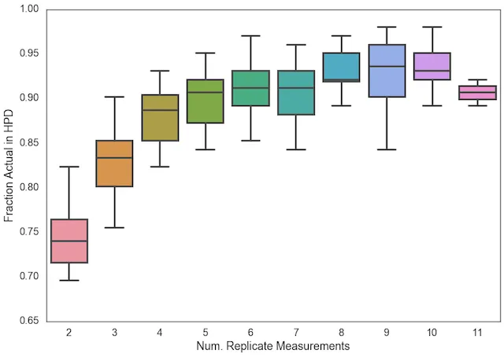
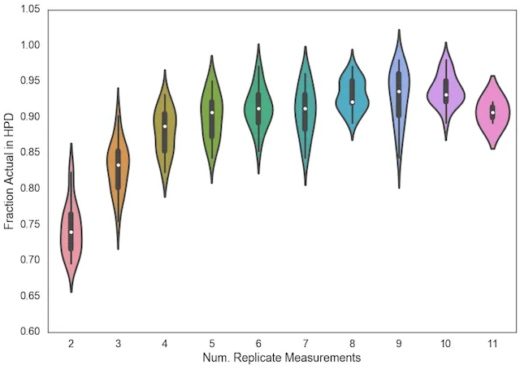

written by Eric J. Ma on 2016-09-27 | tags: data visualization data science
Which would you choose? Let's figure out which might be more useful.
The same data, different visualizations.
Here's the box plot version:

And here's the violin plot version.

Which is more appropriate, and why?
I think the Box Plot is more suited for clearly delineating ranges: (min, max), (IQR), and medians, whereas the Violin Plot is more suited for visualizing the distribution of data, including the possibility of bi-/multi-modality.
@article{
ericmjl-2016-boxplot-plot,
author = {Eric J. Ma},
title = {Boxplot or Violin Plot?},
year = {2016},
month = {09},
day = {27},
howpublished = {\url{https://ericmjl.github.io}},
journal = {Eric J. Ma's Blog},
url = {https://ericmjl.github.io/blog/2016/9/27/boxplot-or-violin-plot},
}
I send out a newsletter with tips and tools for data scientists. Come check it out at Substack.
If you would like to sponsor the coffee that goes into making my posts, please consider GitHub Sponsors!
Finally, I do free 30-minute GenAI strategy calls for teams that are looking to leverage GenAI for maximum impact. Consider booking a call on Calendly if you're interested!